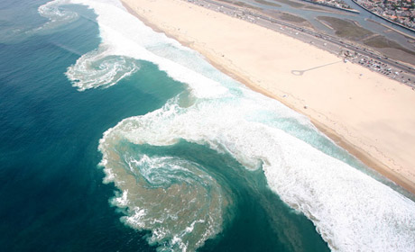

Beaches
Beaches are a coastal landscape sculpted primarily by the forces of water and wind. They may consist of sand, rock, and/or mud, and beaches are particularly vulnerable to change because of their loose sediments and high erosion forces. When talking about beaches, specifically we talk about the shallow water currents and the sand formations.
Tides

The level of water on beaches varies at different points through the day. Most people commonly recognize the pull of the moon as the primary factor of the tides; however, this isn’t always the case. In some locations, the wind has a greater effect on tides. A high breeze off of the ocean will usually give the waves more force, causing it to splash higher on to land. This, coupled with factors like the lunar location and the slope of the beach can determine how high or low the water may reach at any given point in a day.
Currents
Offshore, beaches have water currents, or strong flows of water. Currents usually flow 2 ways: parallel to the beach, or perpendicular. Parallel currents are quite common, and the way that the water will usually flow after washing up onto the sand. However, there are also currents known as Rip Currents.
Longshore Currents

Longshore Currents are the gentle current the run nearly parallel to the beach. This happens because as the water comes into the shallows, it is usually at an acute angle to the beach. However, once the water hits shallow water, it begins to refract, going somewhat against the incoming flow. This causes the water to gently push sideways (parallel) to the shoreline. While the force of this flow depends on the force of incoming waves, on an average day, it is usually 10-30 cm/s.
Rip Currents
Rip currents flow perpendicular to the beach and against the natural force of the waves. From above, they can be fairly easy to spot as there is usually a flow of water inward on each side at the shore, and then an explosion like shape rushing back out to sea. Rip currents are created when the water flowing onto the beach has no where to escape back to the sea, leading to a pressure build up. Eventually, this pressure bubble ‘pops’ in one spot, and all of the water forces itself through the incoming waves and back out to sea. The speed of these currents is much faster than even Olympic swimmers can swim, meaning they are a danger to beach-goers. However, as a rule of thumb, it is always best to swim parallel to the beach out of the Rip Current before heading back to shore.
Dunes

Further up the beach, untouchable by the ebb and flow of waves are usually sand dunes. These dunes run parallel at the back of the beach because they are created by the sediments that try to escape the beach. As wind from the sea blows towards land, it picks up little sediments. These sediments will keep going until they get caught on something (the dunes). This means that the side nearest the water will be steeper as sediment hits it and sticks or falls to the base. On the far side, away from the water, the dunes will be very gradual as the wind picks up the sediments on the top of the dune and rolls them gently downwards as far as it can. This sequence of events also means that if a dune is able to keep growing, it slowly grows closer to the water.